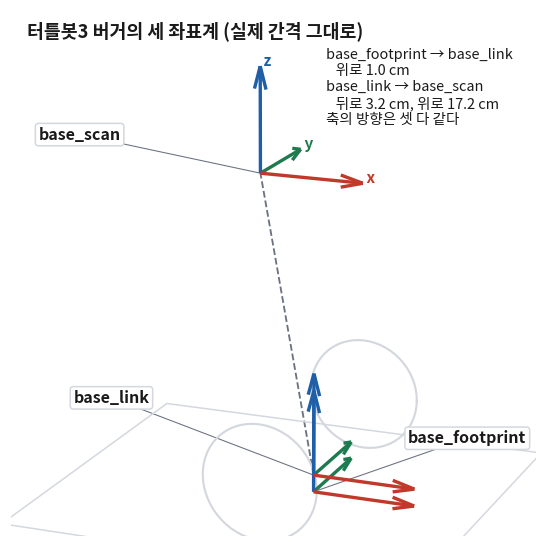
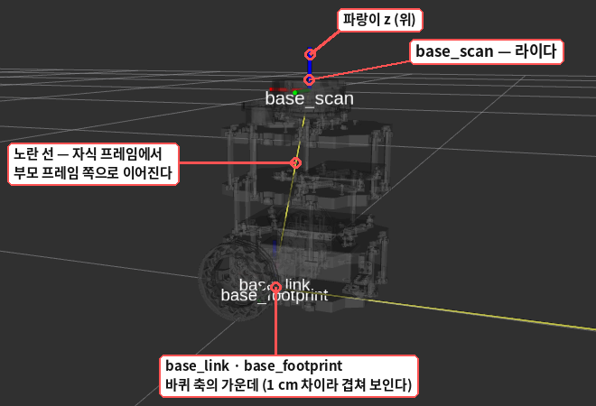
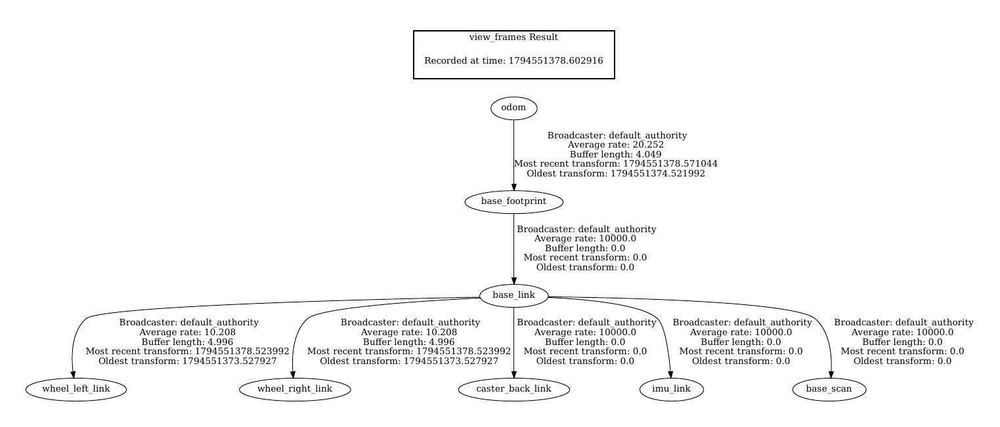
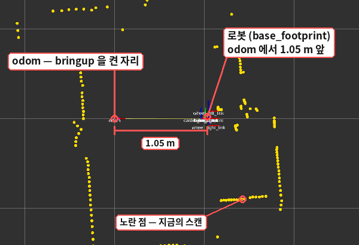
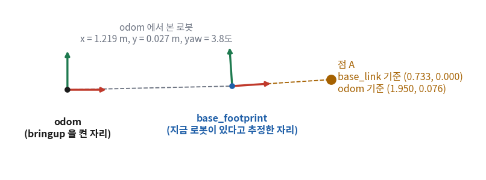

TF2 — 프레임 사이의 좌표 변환
- 25회에서 코드에 적어 넣은 3.2cm를 로봇에게 직접 물어볼 수는 없나?
- 로봇에는 좌표계가 몇 개 있고, 서로 어떻게 이어져 있나? 그것을 어떻게 보나?
- 「이 점을 저 좌표계 기준으로 바꿔 줘」를 코드에서 한 줄로 부탁하려면 무엇이 준비돼 있어야 하나?
- 그 한 줄이 실패하는 경우는 언제이고, 그때 노드는 어떻게 되나?
odom은 무엇을 기준으로 한 좌표계인가? 바퀴를 띄운 채 돌리면 무엇이 바뀌나?
25회에서 라이다 기준의 점을 로봇 몸체 기준으로 옮기는 함수 to_body를 손으로 짰다. 식은 맞았지만 찜찜한 데가 있었다 —
lidar_x = −0.032라는 숫자를 사람이 코드에 적어 넣었다. 로봇이 바뀌면 틀리고, 틀려도 아무도 알려 주지 않는다.
그런데 로봇은 이 숫자를 이미 알고 있다. bringup을 켜면 「라이다는 몸체에서 어디에 달려 있다」, 「몸체는 출발한 자리에서 지금 어디에 있다」 같은 관계가 토픽으로 계속 흘러나온다.
그 관계를 모아 두었다가 좌표 변환을 대신 해 주는 장치가 TF2다. 오늘은 그것을 명령으로 들여다보고, 25회의 scan_points에서 손으로 짠 변환을 TF2에게 맡긴다(v4 ~ v6).
TF2의 코드는 정해진 모양이 있어서 에이전트가 잘 써 주는 편이다. 사람이 챙길 것은 다른 데 있다 — 좌표계의 이름을 정확히 아는 것,
변환이 실패했을 때 노드가 죽지 않게 하는 것, 그리고 odom이 말하는 위치가 추정이라는 것을 아는 것이다. 셋 다 로봇 앞에서 확인한다.
① 프레임과 TF 🔴 사람이 이해한다
25회에서 좌표계를 「원점 하나와 축의 방향을 정해 놓은 기준」이라고 했다. 로봇에는 그런 기준이 여럿 있다. 라이다는 라이다를 기준으로 재고, 바퀴는 바퀴 축을 기준으로 돌고, 「얼마나 왔나」는 출발한 자리를 기준으로 센다. 이것들을 서로 옮겨 다니려면 누가 누구에게서 얼마나 떨어져 있는지를 어딘가에서 관리해야 한다.
1-1 정의
| 용어 | 뜻 |
|---|---|
| 프레임 (frame) | 좌표계 하나. ROS에서는 이름(글자)으로 부른다 — base_link, base_scan, odom |
| 변환 (transform) | 두 프레임 사이의 관계 — 한쪽에서 본 다른 쪽의 자리(평행이동)와 방향(회전). 25회 ⑤절의 (tx, ty)와 φ를 3차원으로 넓힌 것 |
| TF 트리 (TF tree) | 프레임들이 부모 – 자식으로 이어진 모양. 자식 하나에 부모는 하나뿐이다 |
| TF2 | 변환을 주고받고, 모아 두고, 대신 계산해 주는 ROS 2의 라이브러리와 도구 묶음. TF는 transform의 줄임이고 2는 둘째 판이라는 뜻이다 |
변환은 두 토픽으로 흐른다. /tf에는 계속 바뀌는 관계(로봇이 움직이면 달라지는 것)가, /tf_static에는 바뀌지 않는 관계(나사로 고정된 부품 사이)가 실린다.
24회의 ros2 topic list에 이 둘이 이미 보였다.
1-2 터틀봇3의 프레임
| 프레임 이름 | 원점이 어디인가 | 부모 | 관계가 바뀌나 |
|---|---|---|---|
odom | bringup을 켠 순간 로봇이 있던 자리 | (맨 위) | — |
base_footprint | 두 바퀴 축의 가운데를 바닥에 내린 점 | odom | 바뀐다 — 로봇이 움직이면 |
base_link | 로봇 몸체의 기준점. base_footprint의 1cm 위 | base_footprint | 안 바뀐다 |
base_scan | 라이다의 가운데 | base_link | 안 바뀐다 |
imu_link · caster_back_link | IMU 센서 · 뒤쪽 받침 바퀴 | base_link | 안 바뀐다 |
wheel_left_link · wheel_right_link | 왼쪽 · 오른쪽 바퀴 | base_link | 바뀐다 — 바퀴가 돌면 |

base_scan이 base_link보다 뒤로 3.2cm, 위로 17.2cm에 있다. 축의 방향은 셋이 같다 — 로봇의 설명 파일에 라이다가 앞을 보고 달려 있다고 적혀 있다는 뜻이다.
실제로 그렇게 달렸는지는 TF가 알려 주지 않는다. 라이다가 반 바퀴 돌아 달린 로봇에서도 TF는 이 그림과 같으므로, 24회 1-5처럼 물건을 놓아 봐야 안다.
24회 1-4에서 rviz2의 Fixed Frame 목록에 뜨던 이름들이 바로 이 표의 프레임이다. 그때는 「어디에 서서 볼 것인가」로만 골랐는데, 이제 그 이름들이 부모 – 자식으로 이어져 있다는 것이 보인다.
rviz2는 고른 프레임을 화면에 고정하고, 나머지 프레임의 자리를 TF 트리를 따라 계산해 그린다. 트리에 없는 이름(처음 값 map)을 고르면 계산할 길이 없어 화면이 빈다.
rviz2에서 프레임을 직접 볼 수도 있다. Fixed Frame을 base_footprint로 두고 Add에서 RobotModel(Description Topic을 /robot_description으로)과 TF를 더하면 로봇의 모형 위에 프레임의 축이 그려진다.

base_scan), 아래 바퀴 사이가 base_link와 base_footprint다.
노란 선은 프레임이 부모에게 이어진다는 표시이고, 오른쪽으로 길게 뻗은 노란 선은 화면 밖의 odom으로 가는 것이다._link는 「로봇의 부품 하나」라는 뜻으로 붙이는 관습이다. 이름은 로봇마다 다를 수 있다. 라이다 프레임을 laser나 lidar_link라고 부르는 로봇도 많다.
그래서 프레임 이름을 외워서 코드에 적기보다, 메시지가 들고 온 이름을 그대로 쓰는 것이 안전하다(③절).
② view_frames와 tf2_echo 🔴 사람이 읽는다
위 표를 믿지 않아도 된다. 지금 내 로봇에 어떤 프레임이 있고 어떻게 이어져 있는지는 명령 두 개로 직접 볼 수 있다. bringup이 떠 있는 채로 터미널 2에서 친다.
2-1 TF 트리 보기 — view_frames
$ cd ~
$ ros2 run tf2_tools view_frames
[INFO] [1794551373.540292446] [view_frames]: Listening to tf data for 5.0 seconds...
[INFO] [1794551378.578749000] [view_frames]: Generating graph...
[INFO] [1794551378.602565619] [view_frames]: Exporting graph in frames_2026-11-13_15.29.38.pdf file...
5초 동안 /tf와 /tf_static을 듣고, 지금 서 있는 폴더에 PDF 하나를 만든다(그래서 먼저 cd ~로 홈에 갔다). 파일 이름에 날짜와 시각이 붙는다.
로봇 컴퓨터에서 파일 관리자로 열면 이런 그림이 들어 있다.

Average rate가 그 관계가 1초에 몇 번 새로 오는지다 —
odom → base_footprint는 20번쯤, 바퀴는 10번쯤이고, 10000.0이라고 적힌 것은 바뀌지 않는 관계(/tf_static)라는 표시다.base_scan에서 odom까지는 base_link와 base_footprint를 거쳐 올라가면 닿는다.
TF2는 이 길을 따라가며 변환을 차례로 곱해 준다 — 25회 ⑥절의 「변환을 잇는 것은 행렬을 곱하는 것」이 여기서 일어난다. 그림에 없는 이름(map 같은 것)으로는 갈 수 없다.
2-2 두 프레임 사이의 변환 보기 — tf2_echo
$ ros2 run tf2_ros tf2_echo base_link base_scan
At time 0.0
- Translation: [-0.032, 0.000, 0.172]
- Rotation: in Quaternion (xyzw) [0.000, 0.000, 0.000, 1.000]
- Rotation: in RPY (radian) [0.000, -0.000, 0.000]
- Rotation: in RPY (degree) [0.000, -0.000, 0.000]
- Matrix:
1.000 0.000 0.000 -0.032
0.000 1.000 0.000 0.000
0.000 0.000 1.000 0.172
0.000 0.000 0.000 1.000무엇을 먼저 볼지: Translation 한 줄이다. 1초마다 같은 것이 되풀이해 찍히므로 Ctrl+C로 끈다.
| 줄 | 뜻 | 여기서 읽히는 것 |
|---|---|---|
tf2_echo base_link base_scan | 앞 프레임에서 본 뒤 프레임의 자리와 방향 | 「몸체에서 본 라이다」 |
Translation | x, y, z (m) | 뒤로 3.2cm, 좌우로 0, 위로 17.2cm — 25회에 손으로 적은 −0.032가 이것이다 |
Rotation … RPY (degree) | x · y · z축 둘레로 돈 각 (roll · pitch · yaw) | 전부 0 — 돌려 달리지 않았다. 셋째 칸이 25회의 lidar_yaw_deg다 |
Rotation … Quaternion | 같은 회전을 숫자 넷으로 적은 것 | (0, 0, 0, 1)이 「회전 없음」이다 |
Matrix | 회전과 평행이동을 한데 담은 4×4 행렬 | 25회 ⑥절의 동차좌표 행렬의 3차원 판. 맨 오른쪽 세로줄이 평행이동이다 |
At time 0.0 | 이 관계를 받은 시각 | 0.0은 「바뀌지 않는 관계」라는 표시다 |
두 이름의 순서를 바꾸면 거꾸로 본 관계가 나온다 — 「라이다에서 본 몸체」는 앞으로 3.2cm, 아래로 17.2cm다.
$ ros2 run tf2_ros tf2_echo base_scan base_link
At time 0.0
- Translation: [0.032, 0.000, -0.172]
- Rotation: in Quaternion (xyzw) [0.000, 0.000, 0.000, 1.000]tf2_echo가 켜지자마자 「frame does not exist」라고 한다[INFO] [1794551015.399781850] [tf2_echo]: Waiting for transform base_link -> base_scan: Invalid frame ID "base_link" passed to canTransform argument target_frame - frame does not exist
첫 한두 줄에 이것이 찍혀도 놀라지 않아도 된다. 막 켜진 프로그램은 아직 /tf를 한 번도 못 받아서 아는 프레임이 하나도 없다. 잠시 뒤 받기 시작하면 값이 나온다.
몇 초가 지나도 계속 이 줄만 나오면 그때는 이름이 틀렸거나(오타, 그 로봇에 없는 프레임) bringup이 꺼진 것이다. 없는 이름을 주면 이렇게 끝없이 기다린다.
$ ros2 run tf2_ros tf2_echo base_link map
[INFO] [1794551400.127996994] [tf2_echo]: Waiting for transform base_link -> map: Invalid frame ID "map" passed to canTransform argument source_frame - frame does not exist같은 일이 우리 코드에서도 일어난다. ⑤절에서 다시 만난다.
③ PointStamped와 header.frame_id 🔴 사람이 이해한다
TF2에게 「이 점을 옮겨 줘」라고 하려면 숫자 (0.765, −0.022)만 줘서는 안 된다. 그 숫자가 어느 프레임에서 읽은 것인지를 같이 알려 줘야 어디서 어디로 옮길지가 정해진다.
3-1 정의
17회에서 본 geometry_msgs/msg/PointStamped가 그 일을 한다. 점 하나(point)에 header를 붙인 메시지이고,
header.frame_id에 프레임 이름이, header.stamp에 그 점을 잰 시각이 들어간다. 24회의 TwistStamped와 같은 짜임이다.
$ ros2 interface show geometry_msgs/msg/PointStamped
# This represents a Point with reference coordinate frame and timestamp
std_msgs/Header header
builtin_interfaces/Time stamp
int32 sec
uint32 nanosec
string frame_id
Point point
float64 x
float64 y
float64 zLaserScan에는 왜 header.frame_id가 있나」 하고 지나간 것이 여기서 쓰인다. 스캔 메시지는 자기가 어느 프레임에서 잰 값인지를 들고 온다(base_scan).
그 header를 점에 그대로 옮겨 붙이면 프레임 이름을 코드에 적을 필요가 없다. 라이다 프레임의 이름이 다른 로봇에서도 같은 코드가 돈다.
시각(stamp)도 같이 넘어간다 — 「그 점을 잰 순간의 관계로 옮겨 달라」는 뜻이 되고, ⑥절에서 이것이 문제가 된다.
④ tf2 버퍼와 리스너 (v4) 🟡 맡기되 확인
4-1 개념 — 버퍼와 리스너
코드에서 TF2를 쓰려면 물건 둘이 필요하다.
| 이름 | 클래스 | 하는 일 |
|---|---|---|
| 버퍼 (buffer) | tf2_ros::Buffer | 프레임 사이의 변환을 모아 두는 곳. 최근 10초치를 시각과 함께 들고 있다가, 물으면 길을 따라가며 계산해 준다 |
| 리스너 (listener) | tf2_ros::TransformListener | /tf와 /tf_static을 구독해서 받은 것을 버퍼에 채워 넣는다 |
둘을 만들어 두기만 하면 리스너가 뒤에서 알아서 버퍼를 채운다. 우리는 버퍼에게 묻는다 — 「이 PointStamped를 저 프레임 기준으로」.
const geometry_msgs::msg::PointStamped out = tf_buffer_->transform(in, "base_link");4-2 예제에 적용 — to_body와 나란히 놓는다
25회 v3는 점 A를 손으로 적은 lidar_x로 옮겼다. 그 줄을 아직 지우지 않고, 같은 점을 TF2에게도 옮겨 달라고 해서 두 결과를 나란히 찍는다. 같은 숫자가 나오면 TF2가 무엇을 하는지 납득이 된다.
4-3 4단계 (v4) — TF2에게 부탁한다
package.xml과 CMakeLists.txt에 패키지 둘을 더한다.
find_package(geometry_msgs REQUIRED)
# (가운데 cone_drive 부분은 그대로다)
# 25회 — 실행 파일 scan_points. LaserScan 을 받아 점의 좌표(x, y)로 편다
add_executable(scan_points src/scan_points.cpp)
target_link_libraries(scan_points PRIVATE
rclcpp::rclcpp ${sensor_msgs_TARGETS})find_package(geometry_msgs REQUIRED)
find_package(tf2_ros REQUIRED)
find_package(tf2_geometry_msgs REQUIRED)
# (가운데 cone_drive 부분은 그대로다)
# 25회 — 실행 파일 scan_points. LaserScan 을 받아 점의 좌표(x, y)로 편다
# 26회 — TF2 로 좌표계를 옮긴다 (tf2_ros · tf2_geometry_msgs · PointStamped 가 든 geometry_msgs)
add_executable(scan_points src/scan_points.cpp)
target_link_libraries(scan_points PRIVATE
rclcpp::rclcpp ${sensor_msgs_TARGETS} ${geometry_msgs_TARGETS}
tf2_ros::tf2_ros tf2_geometry_msgs::tf2_geometry_msgs)소스에는 헤더 넷, 멤버 둘, 생성자 두 줄이 는다.
#include "geometry_msgs/msg/point_stamped.hpp"
#include "tf2_ros/buffer.h"
#include "tf2_ros/transform_listener.h"
#include "tf2_geometry_msgs/tf2_geometry_msgs.hpp" // TF2 — 버퍼는 좌표계 사이의 관계를 모아 두는 곳, 리스너는 /tf · /tf_static 을 받아 버퍼에 채우는 것
tf_buffer_ = std::make_unique<tf2_ros::Buffer>(this->get_clock());
tf_listener_ = std::make_shared<tf2_ros::TransformListener>(*tf_buffer_); std::unique_ptr<tf2_ros::Buffer> tf_buffer_; // 좌표계 사이의 관계를 모아 둔다
std::shared_ptr<tf2_ros::TransformListener> tf_listener_; // /tf · /tf_static 을 받아 버퍼에 넣는다 const Point a_body = to_body(*a); // 같은 점을 로봇 몸체 기준으로
const Point b_body = to_body(*b);
RCLCPP_INFO_THROTTLE(this->get_logger(), *this->get_clock(), 1000,
"라이다 기준 A (%.3f, %.3f) B (%.3f, %.3f) 사이 %.3f m · 몸체 기준 A (%.3f, %.3f) B (%.3f, %.3f) 사이 %.3f m",
a->x, a->y, b->x, b->y, distance(*a, *b),
a_body.x, a_body.y, b_body.x, b_body.y, distance(a_body, b_body)); const Point a_body = to_body(*a); // 25회 — 손으로 적은 3.2 cm 로 옮긴 것
// 26회 — 점에 「어느 좌표계의 값인가」를 붙여 TF2 에게 넘긴다
geometry_msgs::msg::PointStamped in;
in.header = msg->header; // frame_id 가 "base_scan" 이다. 스캔 메시지가 들고 온 것을 그대로 쓴다
in.point.x = a->x;
in.point.y = a->y;
const geometry_msgs::msg::PointStamped out = tf_buffer_->transform(in, "base_link");
RCLCPP_INFO_THROTTLE(this->get_logger(), *this->get_clock(), 1000,
"%s 기준 A (%.3f, %.3f) · 손으로 옮긴 것 (%.3f, %.3f) · TF2 가 옮긴 것 %s 기준 (%.3f, %.3f, %.3f)",
in.header.frame_id.c_str(), a->x, a->y, a_body.x, a_body.y,
out.header.frame_id.c_str(), out.point.x, out.point.y, out.point.z);🆕 이 코드에서 처음 나오는 것
tf_buffer_->transform(in, "base_link")in의header.frame_id(어디서)와 둘째 인자(어디로)를 보고,header.stamp시각의 관계로 점을 옮겨 새PointStamped를 돌려준다. 돌려받은 것의frame_id는"base_link"로 바뀌어 있다.tf2_geometry_msgs/tf2_geometry_msgs.hpp- TF2에게 「
PointStamped는 이렇게 옮긴다」를 알려 주는 헤더다. 이것을 빠뜨리면transform(…)줄에서 길고 알아보기 힘든 컴파일 오류가 난다..hpp인 것, 나머지 둘은.h인 것도 그대로 적는다. std::make_unique<tf2_ros::Buffer>(this->get_clock())- 11회의
unique_ptr다. 버퍼는 「지금 몇 시인가」를 알아야 해서 노드의 시계를 넘겨받는다. .c_str()std::string을%s로 찍을 수 있는 모양으로 바꿔 준다(21회에서 서비스 응답의 글자를 찍을 때 썼다).
전체 코드 — cone_drive/ (scan_points 4단계 · v4. cone_drive.cpp 는 24회 v5 그대로)
빌드해서 돌리는 법: cd ~/ros_ws && colcon build --packages-select cone_drive && ros2 run cone_drive scan_points
// 26회 scan_points — v4 (4단계: TF2 에게 「이 점을 base_link 기준으로」 부탁한다 — 손으로 옮긴 것과 견준다)
#include <cmath>
#include <memory>
#include <optional>
#include <vector>
#include "rclcpp/rclcpp.hpp"
#include "sensor_msgs/msg/laser_scan.hpp"
#include "geometry_msgs/msg/point_stamped.hpp"
#include "tf2_ros/buffer.h"
#include "tf2_ros/transform_listener.h"
#include "tf2_geometry_msgs/tf2_geometry_msgs.hpp"
// 평면 위의 점 하나 (m). x 는 앞, y 는 왼쪽
struct Point
{
double x;
double y;
};
class ScanPoints : public rclcpp::Node
{
public:
ScanPoints()
: Node("scan_points")
{
// 믿을 수 있는 거리 범위 — 라이다 사양표에서 가져온다 (24회. LDS-02 기준)
this->declare_parameter("range_min", 0.16);
this->declare_parameter("range_max", 8.0);
range_min_ = this->get_parameter("range_min").as_double();
range_max_ = this->get_parameter("range_max").as_double();
// 좌표를 볼 두 방향 (도) — 물건을 놓은 방향으로 바꿔 가며 쓴다
this->declare_parameter("angle_a_deg", 0.0);
this->declare_parameter("angle_b_deg", 90.0);
angle_a_deg_ = this->get_parameter("angle_a_deg").as_double();
angle_b_deg_ = this->get_parameter("angle_b_deg").as_double();
// 로봇 몸체에서 본 라이다의 자리와 방향 — 터틀봇3 버거는 3.2 cm 뒤에, 돌아가지 않고 달려 있다
this->declare_parameter("lidar_x", -0.032);
this->declare_parameter("lidar_y", 0.0);
this->declare_parameter("lidar_yaw_deg", 0.0);
lidar_x_ = this->get_parameter("lidar_x").as_double();
lidar_y_ = this->get_parameter("lidar_y").as_double();
lidar_yaw_ = this->get_parameter("lidar_yaw_deg").as_double() * M_PI / 180.0;
// TF2 — 버퍼는 좌표계 사이의 관계를 모아 두는 곳, 리스너는 /tf · /tf_static 을 받아 버퍼에 채우는 것
tf_buffer_ = std::make_unique<tf2_ros::Buffer>(this->get_clock());
tf_listener_ = std::make_shared<tf2_ros::TransformListener>(*tf_buffer_);
scan_sub_ = this->create_subscription<sensor_msgs::msg::LaserScan>(
"/scan", rclcpp::SensorDataQoS(),
[this](sensor_msgs::msg::LaserScan::ConstSharedPtr msg) { on_scan(msg); });
}
private:
// /scan 이 올 때마다 불린다 — 두 방향의 점과 그 사이 거리를 1초에 한 번 찍는다
void on_scan(sensor_msgs::msg::LaserScan::ConstSharedPtr msg)
{
const std::optional<Point> a = point_at(*msg, angle_a_deg_);
const std::optional<Point> b = point_at(*msg, angle_b_deg_);
if (!a || !b) {
RCLCPP_WARN_THROTTLE(this->get_logger(), *this->get_clock(), 1000,
"%.0f도 또는 %.0f도 방향을 못 봤습니다", angle_a_deg_, angle_b_deg_);
return;
}
const Point a_body = to_body(*a); // 25회 — 손으로 적은 3.2 cm 로 옮긴 것
// 26회 — 점에 「어느 좌표계의 값인가」를 붙여 TF2 에게 넘긴다
geometry_msgs::msg::PointStamped in;
in.header = msg->header; // frame_id 가 "base_scan" 이다. 스캔 메시지가 들고 온 것을 그대로 쓴다
in.point.x = a->x;
in.point.y = a->y;
const geometry_msgs::msg::PointStamped out = tf_buffer_->transform(in, "base_link");
RCLCPP_INFO_THROTTLE(this->get_logger(), *this->get_clock(), 1000,
"%s 기준 A (%.3f, %.3f) · 손으로 옮긴 것 (%.3f, %.3f) · TF2 가 옮긴 것 %s 기준 (%.3f, %.3f, %.3f)",
in.header.frame_id.c_str(), a->x, a->y, a_body.x, a_body.y,
out.header.frame_id.c_str(), out.point.x, out.point.y, out.point.z);
}
// 라이다 기준의 점을 로봇 몸체 기준으로 옮긴다 — 라이다가 돌아간 만큼 돌리고, 라이다가 있는 자리만큼 민다
Point to_body(const Point & p) const
{
const double c = std::cos(lidar_yaw_);
const double s = std::sin(lidar_yaw_);
const double x_rotated = p.x * c - p.y * s; // 회전
const double y_rotated = p.x * s + p.y * c;
return Point{x_rotated + lidar_x_, y_rotated + lidar_y_}; // 평행이동
}
// 두 점 사이의 거리 — √((x₁ − x₂)² + (y₁ − y₂)²)
double distance(const Point & a, const Point & b) const
{
return std::hypot(a.x - b.x, a.y - b.y);
}
// 각도 deg(도)에 가장 가까운 값을 점으로 — 그 값을 못 쟀으면 「없다」
std::optional<Point> point_at(const sensor_msgs::msg::LaserScan & scan, double deg) const
{
const double rad = deg * M_PI / 180.0;
const long n = static_cast<long>(scan.ranges.size());
long i = std::lround((rad - scan.angle_min) / scan.angle_increment) % n; // 24회의 index_near
if (i < 0) {
i += n;
}
const double r = scan.ranges[i];
if (!is_valid(scan.ranges[i])) {
return std::nullopt;
}
const double theta = scan.angle_min + i * scan.angle_increment;
return Point{r * std::cos(theta), r * std::sin(theta)};
}
// 쓸 수 있는 거리인가 — NaN · inf 가 아니고 사양 범위 안에 있다 (24회)
bool is_valid(float r) const
{
return std::isfinite(r) && r >= range_min_ && r <= range_max_;
}
double range_min_ = 0.0; // 파라미터 range_min 에서 읽는다 (m)
double range_max_ = 0.0; // 파라미터 range_max 에서 읽는다 (m)
double angle_a_deg_ = 0.0; // 파라미터 angle_a_deg 에서 읽는다 (도)
double angle_b_deg_ = 0.0; // 파라미터 angle_b_deg 에서 읽는다 (도)
double lidar_x_ = 0.0; // 파라미터 lidar_x 에서 읽는다 (m) — 몸체에서 본 라이다의 x
double lidar_y_ = 0.0; // 파라미터 lidar_y 에서 읽는다 (m)
double lidar_yaw_ = 0.0; // 파라미터 lidar_yaw_deg 에서 읽어 rad 로 바꿔 둔다
std::unique_ptr<tf2_ros::Buffer> tf_buffer_; // 좌표계 사이의 관계를 모아 둔다
std::shared_ptr<tf2_ros::TransformListener> tf_listener_; // /tf · /tf_static 을 받아 버퍼에 넣는다
rclcpp::Subscription<sensor_msgs::msg::LaserScan>::SharedPtr scan_sub_;
};
int main(int argc, char ** argv)
{
rclcpp::init(argc, argv);
auto node = std::make_shared<ScanPoints>();
rclcpp::spin(node); // 구독 콜백은 이 안에서 불린다
rclcpp::shutdown();
return 0;
}cmake_minimum_required(VERSION 3.8)
project(cone_drive)
if(CMAKE_COMPILER_IS_GNUCXX OR CMAKE_CXX_COMPILER_ID MATCHES "Clang")
add_compile_options(-Wall -Wextra -Wpedantic)
endif()
# find dependencies
find_package(ament_cmake REQUIRED)
find_package(rclcpp REQUIRED)
find_package(sensor_msgs REQUIRED)
find_package(geometry_msgs REQUIRED)
find_package(tf2_ros REQUIRED)
find_package(tf2_geometry_msgs REQUIRED)
# 24회 — 실행 파일 cone_drive. LaserScan(sensor_msgs)을 받는다
# 24회 5단계 — TwistStamped(geometry_msgs)를 보낸다
add_executable(cone_drive src/cone_drive.cpp)
target_link_libraries(cone_drive PRIVATE
rclcpp::rclcpp ${sensor_msgs_TARGETS} ${geometry_msgs_TARGETS})
# 25회 — 실행 파일 scan_points. LaserScan 을 받아 점의 좌표(x, y)로 편다
# 26회 — TF2 로 좌표계를 옮긴다 (tf2_ros · tf2_geometry_msgs · PointStamped 가 든 geometry_msgs)
add_executable(scan_points src/scan_points.cpp)
target_link_libraries(scan_points PRIVATE
rclcpp::rclcpp ${sensor_msgs_TARGETS} ${geometry_msgs_TARGETS}
tf2_ros::tf2_ros tf2_geometry_msgs::tf2_geometry_msgs)
# 만든 실행 파일을 ros2 run 이 찾는 자리에 설치한다
install(TARGETS cone_drive scan_points
DESTINATION lib/${PROJECT_NAME})
if(BUILD_TESTING)
find_package(ament_lint_auto REQUIRED)
# the following line skips the linter which checks for copyrights
# comment the line when a copyright and license is added to all source files
set(ament_cmake_copyright_FOUND TRUE)
# the following line skips cpplint (only works in a git repo)
# comment the line when this package is in a git repo and when
# a copyright and license is added to all source files
set(ament_cmake_cpplint_FOUND TRUE)
ament_lint_auto_find_test_dependencies()
endif()
ament_package()<?xml version="1.0"?>
<?xml-model href="http://download.ros.org/schema/package_format3.xsd" schematypens="http://www.w3.org/2001/XMLSchema"?>
<package format="3">
<name>cone_drive</name>
<version>0.0.0</version>
<description>로봇공학 4부 실습 — 터틀봇3의 라이다로 콘을 찾아 따라가는 노드</description>
<maintainer email="student@example.com">Student Name</maintainer>
<license>MIT</license>
<buildtool_depend>ament_cmake</buildtool_depend>
<depend>rclcpp</depend>
<depend>sensor_msgs</depend>
<depend>geometry_msgs</depend>
<depend>tf2_ros</depend>
<depend>tf2_geometry_msgs</depend>
<test_depend>ament_lint_auto</test_depend>
<test_depend>ament_lint_common</test_depend>
<export>
<build_type>ament_cmake</build_type>
</export>
</package>4-4 실제로 나온 출력
$ ros2 run cone_drive scan_points
[INFO] [1794551116.611625799] [scan_points]: base_scan 기준 A (0.765, -0.022) · 손으로 옮긴 것 (0.733, -0.022) · TF2 가 옮긴 것 base_link 기준 (0.733, -0.022, 0.172)
[INFO] [1794551117.661021106] [scan_points]: base_scan 기준 A (0.765, -0.011) · 손으로 옮긴 것 (0.733, -0.011) · TF2 가 옮긴 것 base_link 기준 (0.733, -0.011, 0.172)
[INFO] [1794551118.701728481] [scan_points]: base_scan 기준 A (0.766, -0.009) · 손으로 옮긴 것 (0.734, -0.009) · TF2 가 옮긴 것 base_link 기준 (0.734, -0.009, 0.172)/tf_static에서 받아 알고 있었던 것이다.
하나 더 얻은 것도 있다. z가 0.172다. 라이다가 잰 점은 라이다 높이에 있으므로, 몸체 기준으로 보면 17.2cm 위에 있다. 25회에는 평면만 봤기 때문에 이 숫자가 없었다.
그런데 이 프로그램을 여러 번 껐다 켜 보면 가끔, 켜자마자 이렇게 끝난다. 여섯 번 켰더니 네 번이 이랬다.
$ ros2 run cone_drive scan_points
terminate called after throwing an instance of 'tf2::LookupException'
what(): "base_link" passed to lookupTransform argument target_frame does not exist.
[ros2run]: Aborted노드가 죽었다. 다음 절이 이것을 다룬다.
⑤ TransformException (v5) 🔴 사람이 판단한다
5-1 개념 — 변환은 실패할 수 있다
transform()은 변환을 못 하면 값을 돌려주는 대신 예외를 던진다. 받아 주는 곳이 없으면 프로그램이 그 자리에서 끝난다 — 위에서 본 terminate called가 그것이다.
못 하는 경우는 크게 셋이고, 이름이 따로 있다.
| 예외 | 언제 나나 | 메시지에 보이는 말 |
|---|---|---|
tf2::LookupException | 그 이름의 프레임을 모른다 — 이름이 틀렸거나, 아직 /tf를 못 받았다 | … does not exist |
tf2::ConnectivityException | 두 프레임이 한 나무로 이어져 있지 않다 | … not part of the same tree |
tf2::ExtrapolationException | 요청한 시각의 관계가 버퍼에 없다 — 아직 안 왔거나 너무 오래됐다 | … extrapolation into the future / past |
셋 다 tf2::TransformException의 파생 클래스다(10회). 그래서 기반 클래스 하나로 한꺼번에 받을 수 있다.
v4가 죽은 것은 첫 줄의 경우다. 노드가 막 켜져 리스너가 /tf_static을 받기도 전에 첫 스캔이 먼저 도착했다. ②절의 tf2_echo가 처음에 「frame does not exist」라고 한 것과 같은 까닭이고,
어느 쪽이 먼저 오느냐에 달려 있어서 될 때도 있고 안 될 때도 있다.
🆕 처음 나오는 문법 — try / catch
try { … } catch (const 타입 & e) { … }try블록 안에서 예외가 던져지면 그 자리에서 블록을 빠져나와, 타입이 맞는catch블록으로 간다. 예외가 없으면catch는 건너뛴다. 잡은 예외의 설명은e.what()으로 얻는다. 2부에서 다루지 않은 문법이고, 이 과목에서는 이 자리에서만 쓴다.
5-2 5단계 (v5) — 예외를 받고, 손으로 적은 숫자를 지운다
TF2가 같은 답을 내는 것을 확인했으니 to_body와 파라미터 lidar_x · lidar_y · lidar_yaw_deg를 지운다. 점도 A 하나만 남긴다.
대신 「어느 프레임으로 옮길지」를 파라미터 target_frame으로 받는다.
const geometry_msgs::msg::PointStamped out = tf_buffer_->transform(in, "base_link"); geometry_msgs::msg::PointStamped out;
try {
out = tf_buffer_->transform(in, target_frame_);
} catch (const tf2::TransformException & e) {
// 좌표계 이름이 틀렸거나, 두 좌표계의 관계를 아직 못 받았다 — 이번 스캔은 건너뛴다
RCLCPP_WARN_THROTTLE(this->get_logger(), *this->get_clock(), 1000,
"%s → %s 로 옮기지 못했습니다: %s",
in.header.frame_id.c_str(), target_frame_.c_str(), e.what());
return;
}
catch에서 무엇을 할지가 사람이 정할 일이다. 여기서는 「경고를 찍고 이번 스캔을 버린다」로 했다. 옮기지 못한 점으로 계산을 이어 가는 것보다 한 프레임을 쉬는 편이 낫다.
24회의 「모를 때는 선다」와 같은 생각이다.
전체 코드 — cone_drive/src/scan_points.cpp (5단계 · v5. CMakeLists.txt · package.xml 은 v4 그대로)
빌드해서 돌리는 법: cd ~/ros_ws && colcon build --packages-select cone_drive && ros2 run cone_drive scan_points
// 26회 scan_points — v5 (5단계: 변환을 못 할 때의 예외를 받는다 — 손으로 적은 3.2 cm 는 지운다)
#include <cmath>
#include <memory>
#include <optional>
#include <string>
#include <vector>
#include "rclcpp/rclcpp.hpp"
#include "sensor_msgs/msg/laser_scan.hpp"
#include "geometry_msgs/msg/point_stamped.hpp"
#include "tf2_ros/buffer.h"
#include "tf2_ros/transform_listener.h"
#include "tf2_geometry_msgs/tf2_geometry_msgs.hpp"
// 평면 위의 점 하나 (m). x 는 앞, y 는 왼쪽
struct Point
{
double x;
double y;
};
class ScanPoints : public rclcpp::Node
{
public:
ScanPoints()
: Node("scan_points")
{
// 믿을 수 있는 거리 범위 — 라이다 사양표에서 가져온다 (24회. LDS-02 기준)
this->declare_parameter("range_min", 0.16);
this->declare_parameter("range_max", 8.0);
range_min_ = this->get_parameter("range_min").as_double();
range_max_ = this->get_parameter("range_max").as_double();
// 좌표를 볼 방향 (도) — 물건을 놓은 방향으로 바꿔 가며 쓴다
this->declare_parameter("angle_a_deg", 0.0);
angle_a_deg_ = this->get_parameter("angle_a_deg").as_double();
// 어느 좌표계로 옮길 것인가 — 좌표계의 이름을 글자로 준다
this->declare_parameter("target_frame", "base_link");
target_frame_ = this->get_parameter("target_frame").as_string();
// TF2 — 버퍼는 좌표계 사이의 관계를 모아 두는 곳, 리스너는 /tf · /tf_static 을 받아 버퍼에 채우는 것
tf_buffer_ = std::make_unique<tf2_ros::Buffer>(this->get_clock());
tf_listener_ = std::make_shared<tf2_ros::TransformListener>(*tf_buffer_);
scan_sub_ = this->create_subscription<sensor_msgs::msg::LaserScan>(
"/scan", rclcpp::SensorDataQoS(),
[this](sensor_msgs::msg::LaserScan::ConstSharedPtr msg) { on_scan(msg); });
}
private:
// /scan 이 올 때마다 불린다 — 두 방향의 점과 그 사이 거리를 1초에 한 번 찍는다
void on_scan(sensor_msgs::msg::LaserScan::ConstSharedPtr msg)
{
const std::optional<Point> a = point_at(*msg, angle_a_deg_);
if (!a) {
RCLCPP_WARN_THROTTLE(this->get_logger(), *this->get_clock(), 1000,
"%.0f도 방향을 못 봤습니다", angle_a_deg_);
return;
}
// 점에 「어느 좌표계의 값인가」를 붙여 TF2 에게 넘긴다
geometry_msgs::msg::PointStamped in;
in.header = msg->header; // frame_id 가 "base_scan" 이다. 스캔 메시지가 들고 온 것을 그대로 쓴다
in.point.x = a->x;
in.point.y = a->y;
geometry_msgs::msg::PointStamped out;
try {
out = tf_buffer_->transform(in, target_frame_);
} catch (const tf2::TransformException & e) {
// 좌표계 이름이 틀렸거나, 두 좌표계의 관계를 아직 못 받았다 — 이번 스캔은 건너뛴다
RCLCPP_WARN_THROTTLE(this->get_logger(), *this->get_clock(), 1000,
"%s → %s 로 옮기지 못했습니다: %s",
in.header.frame_id.c_str(), target_frame_.c_str(), e.what());
return;
}
RCLCPP_INFO_THROTTLE(this->get_logger(), *this->get_clock(), 1000,
"%s 기준 A (%.3f, %.3f) · %s 기준 A (%.3f, %.3f, %.3f)",
in.header.frame_id.c_str(), a->x, a->y,
out.header.frame_id.c_str(), out.point.x, out.point.y, out.point.z);
}
// 각도 deg(도)에 가장 가까운 값을 점으로 — 그 값을 못 쟀으면 「없다」
std::optional<Point> point_at(const sensor_msgs::msg::LaserScan & scan, double deg) const
{
const double rad = deg * M_PI / 180.0;
const long n = static_cast<long>(scan.ranges.size());
long i = std::lround((rad - scan.angle_min) / scan.angle_increment) % n; // 24회의 index_near
if (i < 0) {
i += n;
}
const double r = scan.ranges[i];
if (!is_valid(scan.ranges[i])) {
return std::nullopt;
}
const double theta = scan.angle_min + i * scan.angle_increment;
return Point{r * std::cos(theta), r * std::sin(theta)};
}
// 쓸 수 있는 거리인가 — NaN · inf 가 아니고 사양 범위 안에 있다 (24회)
bool is_valid(float r) const
{
return std::isfinite(r) && r >= range_min_ && r <= range_max_;
}
double range_min_ = 0.0; // 파라미터 range_min 에서 읽는다 (m)
double range_max_ = 0.0; // 파라미터 range_max 에서 읽는다 (m)
double angle_a_deg_ = 0.0; // 파라미터 angle_a_deg 에서 읽는다 (도)
std::string target_frame_; // 파라미터 target_frame 에서 읽는다 — 옮겨 갈 좌표계의 이름
std::unique_ptr<tf2_ros::Buffer> tf_buffer_; // 좌표계 사이의 관계를 모아 둔다
std::shared_ptr<tf2_ros::TransformListener> tf_listener_; // /tf · /tf_static 을 받아 버퍼에 넣는다
rclcpp::Subscription<sensor_msgs::msg::LaserScan>::SharedPtr scan_sub_;
};
int main(int argc, char ** argv)
{
rclcpp::init(argc, argv);
auto node = std::make_shared<ScanPoints>();
rclcpp::spin(node); // 구독 콜백은 이 안에서 불린다
rclcpp::shutdown();
return 0;
}실제로 나온 출력이다. 이번에는 켜자마자 실패해도 죽지 않고 다음 스캔에서 이어 간다.
$ ros2 run cone_drive scan_points
[WARN] [1794551245.601174081] [scan_points]: base_scan → base_link 로 옮기지 못했습니다: "base_link" passed to lookupTransform argument target_frame does not exist.
[INFO] [1794551245.691289844] [scan_points]: base_scan 기준 A (0.765, 0.000) · base_link 기준 A (0.733, 0.000, 0.172)
[INFO] [1794551246.731435478] [scan_points]: base_scan 기준 A (0.765, 0.001) · base_link 기준 A (0.733, 0.001, 0.172)없는 프레임(map)과, 다른 프레임(base_footprint)을 줘 본다.
$ ros2 run cone_drive scan_points --ros-args -p target_frame:=map
[WARN] [1794551251.551222102] [scan_points]: base_scan → map 로 옮기지 못했습니다: "map" passed to lookupTransform argument target_frame does not exist.
[WARN] [1794551252.581525099] [scan_points]: base_scan → map 로 옮기지 못했습니다: "map" passed to lookupTransform argument target_frame does not exist.
$ ros2 run cone_drive scan_points --ros-args -p target_frame:=base_footprint
[WARN] [1794551254.572071950] [scan_points]: base_scan → base_footprint 로 옮기지 못했습니다: "base_footprint" passed to lookupTransform argument target_frame does not exist.
[INFO] [1794551254.661811567] [scan_points]: base_scan 기준 A (0.765, 0.004) · base_footprint 기준 A (0.733, 0.004, 0.182)
[INFO] [1794551255.701950158] [scan_points]: base_scan 기준 A (0.765, -0.023) · base_footprint 기준 A (0.733, -0.023, 0.182)map은 이 로봇에 없는 프레임이라 경고가 끝없이 되풀이된다 — 처음 한 번만 나오고 마는 경고와 계속 나오는 경고를 구별해서 읽는다. 앞의 것은 켜지는 순간의 일이고 뒤의 것은 고쳐야 하는 일이다.
base_footprint로 바꾸면 z가 0.172에서 0.182가 됐다. 한 단계 더 올라가 1cm가 더해진 것이다. 코드는 한 글자도 안 바뀌었고 이름만 바꿨는데 두 단계짜리 변환이 됐다.
⑥ odom 프레임과 /odom (v6) 🔴 사람이 이해한다
지금까지의 프레임은 전부 로봇에 붙어 있어서 로봇이 가면 같이 간다. 그러면 「로봇이 얼마나 갔나」는 무엇을 기준으로 말할까? 로봇에 붙어 있지 않은 기준이 하나 필요하다.
6-1 개념 — 오도메트리(odometry)와 odom 프레임
오도메트리(odometry)는 바퀴가 돈 양을 세어서 「출발한 자리에서 얼마나, 어느 쪽으로 왔나」를 추정하는 것이다. 자동차의 주행 거리계(odometer)와 같은 말에서 왔다. 터틀봇3는 이 추정을 두 가지 모양으로 내보낸다.
| 무엇 | 어디로 | 무엇이 들어 있나 |
|---|---|---|
TF 변환 odom → base_footprint | /tf (1초에 20번쯤) | 출발한 자리에서 본 로봇의 자리와 방향 |
토픽 /odom | nav_msgs/msg/Odometry (1초에 22번쯤) | 같은 자리와 방향(pose)에, 지금의 속도(twist)까지 |
odom 프레임의 원점은 bringup을 켠 순간 로봇이 있던 자리다. 그때의 앞이 x, 왼쪽이 y다. 지금 값을 본다.
$ ros2 run tf2_ros tf2_echo odom base_footprint
At time 1794551392.871073629
- Translation: [1.219, 0.027, 0.000]
- Rotation: in Quaternion (xyzw) [0.000, 0.000, 0.032, 0.999]
- Rotation: in RPY (radian) [0.000, -0.000, 0.065]
- Rotation: in RPY (degree) [0.000, -0.000, 3.720]$ ros2 topic echo /odom --once
header:
stamp:
sec: 1794551404
nanosec: 470916352
frame_id: odom
child_frame_id: base_footprint
pose:
pose:
position:
x: 1.2190789773723378
y: 0.027359793329750446
z: 0.0
orientation:
x: 0.0
y: 0.0
z: 0.03257532694580658
w: 0.9994692832070298
(… 아래 줄임 …)At time이 0.0이 아니라 실제 시각인 것도 본다. 계속 바뀌는 관계라는 뜻이다.
그런데 이 로봇은 받침 위에서 한 발짝도 움직인 적이 없다. 1.219m는 앞 회차들을 만들며 띄운 바퀴를 돌린 만큼 쌓인 숫자다. 오도메트리는 바퀴를 셀 뿐, 로봇이 정말 갔는지는 모른다.
rviz2에서 Fixed Frame을 odom으로 바꾸면 이 관계가 눈에 보인다. 아래는 bringup을 새로 켠 뒤 띄운 바퀴에 직진 0.05 m/s를 20초 보낸 다음의 화면이다.

odom으로 둔 rviz2. 로봇은 받침 위에서 움직이지 않았는데, 화면에서는 출발한 자리에서 1.05m 앞으로 가 있다.
스캔(노란 점)도 로봇과 함께 옮겨 그려진다 — 방 전체가 1m 밀려 간 셈이다. 바퀴를 돌리는 동안 이 화면을 보고 있으면 방의 윤곽이 통째로 미끄러져 가는 것이 보인다.6-2 6단계 (v6) — /odom을 구독하고, 점을 odom 기준으로 옮긴다
v5를 그대로 target_frame:=odom으로 켜 보면 이번에는 다른 예외가 되풀이된다.
$ ros2 run cone_drive scan_points --ros-args -p target_frame:=odom
[WARN] [1794551443.891503793] [scan_points]: base_scan → odom 로 옮기지 못했습니다: Lookup would require extrapolation into the future. Requested time 1794551443.890793 but the latest data is at time 1794551443.871092, when look
[WARN] [1794551444.931536900] [scan_points]: base_scan → odom 로 옮기지 못했습니다: Lookup would require extrapolation into the future. Requested time 1794551444.930817 but the latest data is at time 1794551444.870916, when look
5-1 표의 셋째 줄이다. 메시지를 읽어 보면 까닭이 적혀 있다 — 스캔을 잰 시각은 …443.890인데 버퍼에 있는 가장 새 odom 관계는 …443.871, 0.02초 전 것이다.
「그 순간의 관계는 아직 안 왔다」는 말이다. base_link ↔ base_scan처럼 바뀌지 않는 관계는 시각을 따지지 않지만, odom처럼 계속 바뀌는 관계는 그 시각의 것이 있어야 한다.
조금만 기다리면 오므로 기다릴 시간을 셋째 인자로 준다.
out = tf_buffer_->transform(in, target_frame_); // 스캔을 잰 시각의 관계가 아직 안 왔으면 0.1초까지 기다린다 — odom 처럼 계속 바뀌는 좌표계에 필요하다
out = tf_buffer_->transform(in, target_frame_, tf2::durationFromSec(0.1));그리고 /odom을 구독해 로봇의 자리와 방향을 같이 찍는다. 구독자는 20회와 같은 모양이고, 방향을 도로 바꾸는 함수가 하나 든다.
odom_sub_ = this->create_subscription<nav_msgs::msg::Odometry>(
"/odom", 10,
[this](nav_msgs::msg::Odometry::ConstSharedPtr msg) { on_odom(msg); }); // 방향(쿼터니언)에서 yaw(도)를 꺼낸다 — 바닥을 달리는 로봇은 z 와 w 두 칸만 쓴다
double yaw_deg(const geometry_msgs::msg::Quaternion & q) const
{
return 2.0 * std::atan2(q.z, q.w) * 180.0 / M_PI;
}🆕 이 코드에서 처음 나오는 것
nav_msgs/msg/Odometrypose.pose.position(x, y, z)과pose.pose.orientation(방향, 쿼터니언), 그리고twist.twist(지금 속도)가 들어 있다.pose가 두 번 겹친 것은 바깥pose에 「얼마나 믿을 수 있나」(covariance)가 같이 들어 있어서다.CMakeLists.txt와package.xml에nav_msgs를 더한다.2.0 * std::atan2(q.z, q.w)- 쿼터니언에서 yaw를 꺼내는 식이다. 바닥 위에서 좌우로만 도는 로봇에서만 이렇게 줄여 쓸 수 있다(그때 x와 y 칸은 0이다). 위 출력의 z 0.0326, w 0.9995를 넣으면 2 × atan2(0.0326, 0.9995) = 0.0652 rad = 3.7도 —
tf2_echo의 숫자와 맞는다.atan2는 25회 「조금 더」에 나왔다. tf2::durationFromSec(0.1)- 「0.1초」라는 길이를 TF2가 쓰는 타입으로 만든다. 이 시간 안에 관계가 도착하면 계산해 주고, 끝내 안 오면 그때 예외를 던진다.
전체 코드 — cone_drive/ (scan_points 6단계 · v6 완성본)
빌드해서 돌리는 법: cd ~/ros_ws && colcon build --packages-select cone_drive && ros2 run cone_drive scan_points --ros-args -p target_frame:=odom
// 26회 scan_points — v6 (6단계: /odom 을 구독한다 · 변환을 0.1초까지 기다린다 — odom 기준 좌표를 찍는다)
#include <cmath>
#include <memory>
#include <optional>
#include <string>
#include <vector>
#include "rclcpp/rclcpp.hpp"
#include "sensor_msgs/msg/laser_scan.hpp"
#include "geometry_msgs/msg/point_stamped.hpp"
#include "nav_msgs/msg/odometry.hpp"
#include "tf2_ros/buffer.h"
#include "tf2_ros/transform_listener.h"
#include "tf2_geometry_msgs/tf2_geometry_msgs.hpp"
// 평면 위의 점 하나 (m). x 는 앞, y 는 왼쪽
struct Point
{
double x;
double y;
};
class ScanPoints : public rclcpp::Node
{
public:
ScanPoints()
: Node("scan_points")
{
// 믿을 수 있는 거리 범위 — 라이다 사양표에서 가져온다 (24회. LDS-02 기준)
this->declare_parameter("range_min", 0.16);
this->declare_parameter("range_max", 8.0);
range_min_ = this->get_parameter("range_min").as_double();
range_max_ = this->get_parameter("range_max").as_double();
// 좌표를 볼 방향 (도) — 물건을 놓은 방향으로 바꿔 가며 쓴다
this->declare_parameter("angle_a_deg", 0.0);
angle_a_deg_ = this->get_parameter("angle_a_deg").as_double();
// 어느 좌표계로 옮길 것인가 — 좌표계의 이름을 글자로 준다
this->declare_parameter("target_frame", "base_link");
target_frame_ = this->get_parameter("target_frame").as_string();
// TF2 — 버퍼는 좌표계 사이의 관계를 모아 두는 곳, 리스너는 /tf · /tf_static 을 받아 버퍼에 채우는 것
tf_buffer_ = std::make_unique<tf2_ros::Buffer>(this->get_clock());
tf_listener_ = std::make_shared<tf2_ros::TransformListener>(*tf_buffer_);
odom_sub_ = this->create_subscription<nav_msgs::msg::Odometry>(
"/odom", 10,
[this](nav_msgs::msg::Odometry::ConstSharedPtr msg) { on_odom(msg); });
scan_sub_ = this->create_subscription<sensor_msgs::msg::LaserScan>(
"/scan", rclcpp::SensorDataQoS(),
[this](sensor_msgs::msg::LaserScan::ConstSharedPtr msg) { on_scan(msg); });
}
private:
// /odom 이 올 때마다 불린다 (1초에 스무 번쯤) — 받은 것을 들고 있기만 한다
void on_odom(nav_msgs::msg::Odometry::ConstSharedPtr msg)
{
odom_ = msg;
}
// /scan 이 올 때마다 불린다 — 두 방향의 점과 그 사이 거리를 1초에 한 번 찍는다
void on_scan(sensor_msgs::msg::LaserScan::ConstSharedPtr msg)
{
const std::optional<Point> a = point_at(*msg, angle_a_deg_);
if (!a) {
RCLCPP_WARN_THROTTLE(this->get_logger(), *this->get_clock(), 1000,
"%.0f도 방향을 못 봤습니다", angle_a_deg_);
return;
}
// 점에 「어느 좌표계의 값인가」를 붙여 TF2 에게 넘긴다
geometry_msgs::msg::PointStamped in;
in.header = msg->header; // frame_id 가 "base_scan" 이다. 스캔 메시지가 들고 온 것을 그대로 쓴다
in.point.x = a->x;
in.point.y = a->y;
geometry_msgs::msg::PointStamped out;
try {
// 스캔을 잰 시각의 관계가 아직 안 왔으면 0.1초까지 기다린다 — odom 처럼 계속 바뀌는 좌표계에 필요하다
out = tf_buffer_->transform(in, target_frame_, tf2::durationFromSec(0.1));
} catch (const tf2::TransformException & e) {
// 좌표계 이름이 틀렸거나, 기다려도 두 좌표계의 관계가 오지 않았다 — 이번 스캔은 건너뛴다
RCLCPP_WARN_THROTTLE(this->get_logger(), *this->get_clock(), 1000,
"%s → %s 로 옮기지 못했습니다: %s",
in.header.frame_id.c_str(), target_frame_.c_str(), e.what());
return;
}
if (!odom_) { // 아직 /odom 을 한 번도 못 받았다
return;
}
const auto & pose = odom_->pose.pose; // 출발한 자리(odom)에서 본 로봇의 자리와 방향
RCLCPP_INFO_THROTTLE(this->get_logger(), *this->get_clock(), 1000,
"로봇 x = %.3f, y = %.3f, yaw = %.1f도 · %s 기준 A (%.3f, %.3f) · %s 기준 A (%.3f, %.3f)",
pose.position.x, pose.position.y, yaw_deg(pose.orientation),
in.header.frame_id.c_str(), a->x, a->y,
out.header.frame_id.c_str(), out.point.x, out.point.y);
}
// 방향(쿼터니언)에서 yaw(도)를 꺼낸다 — 바닥을 달리는 로봇은 z 와 w 두 칸만 쓴다
double yaw_deg(const geometry_msgs::msg::Quaternion & q) const
{
return 2.0 * std::atan2(q.z, q.w) * 180.0 / M_PI;
}
// 각도 deg(도)에 가장 가까운 값을 점으로 — 그 값을 못 쟀으면 「없다」
std::optional<Point> point_at(const sensor_msgs::msg::LaserScan & scan, double deg) const
{
const double rad = deg * M_PI / 180.0;
const long n = static_cast<long>(scan.ranges.size());
long i = std::lround((rad - scan.angle_min) / scan.angle_increment) % n; // 24회의 index_near
if (i < 0) {
i += n;
}
const double r = scan.ranges[i];
if (!is_valid(scan.ranges[i])) {
return std::nullopt;
}
const double theta = scan.angle_min + i * scan.angle_increment;
return Point{r * std::cos(theta), r * std::sin(theta)};
}
// 쓸 수 있는 거리인가 — NaN · inf 가 아니고 사양 범위 안에 있다 (24회)
bool is_valid(float r) const
{
return std::isfinite(r) && r >= range_min_ && r <= range_max_;
}
double range_min_ = 0.0; // 파라미터 range_min 에서 읽는다 (m)
double range_max_ = 0.0; // 파라미터 range_max 에서 읽는다 (m)
double angle_a_deg_ = 0.0; // 파라미터 angle_a_deg 에서 읽는다 (도)
std::string target_frame_; // 파라미터 target_frame 에서 읽는다 — 옮겨 갈 좌표계의 이름
std::unique_ptr<tf2_ros::Buffer> tf_buffer_; // 좌표계 사이의 관계를 모아 둔다
std::shared_ptr<tf2_ros::TransformListener> tf_listener_; // /tf · /tf_static 을 받아 버퍼에 넣는다
rclcpp::Subscription<sensor_msgs::msg::LaserScan>::SharedPtr scan_sub_;
rclcpp::Subscription<nav_msgs::msg::Odometry>::SharedPtr odom_sub_;
nav_msgs::msg::Odometry::ConstSharedPtr odom_; // 마지막으로 받은 /odom (처음에는 비어 있다)
};
int main(int argc, char ** argv)
{
rclcpp::init(argc, argv);
auto node = std::make_shared<ScanPoints>();
rclcpp::spin(node); // 구독 콜백은 이 안에서 불린다
rclcpp::shutdown();
return 0;
}cmake_minimum_required(VERSION 3.8)
project(cone_drive)
if(CMAKE_COMPILER_IS_GNUCXX OR CMAKE_CXX_COMPILER_ID MATCHES "Clang")
add_compile_options(-Wall -Wextra -Wpedantic)
endif()
# find dependencies
find_package(ament_cmake REQUIRED)
find_package(rclcpp REQUIRED)
find_package(sensor_msgs REQUIRED)
find_package(geometry_msgs REQUIRED)
find_package(tf2_ros REQUIRED)
find_package(tf2_geometry_msgs REQUIRED)
find_package(nav_msgs REQUIRED)
# 24회 — 실행 파일 cone_drive. LaserScan(sensor_msgs)을 받는다
# 24회 5단계 — TwistStamped(geometry_msgs)를 보낸다
add_executable(cone_drive src/cone_drive.cpp)
target_link_libraries(cone_drive PRIVATE
rclcpp::rclcpp ${sensor_msgs_TARGETS} ${geometry_msgs_TARGETS})
# 25회 — 실행 파일 scan_points. LaserScan 을 받아 점의 좌표(x, y)로 편다
# 26회 — TF2 로 좌표계를 옮긴다 (tf2_ros · tf2_geometry_msgs · PointStamped 가 든 geometry_msgs)
# 26회 6단계 — Odometry(nav_msgs)를 받는다
add_executable(scan_points src/scan_points.cpp)
target_link_libraries(scan_points PRIVATE
rclcpp::rclcpp ${sensor_msgs_TARGETS} ${geometry_msgs_TARGETS}
tf2_ros::tf2_ros tf2_geometry_msgs::tf2_geometry_msgs ${nav_msgs_TARGETS})
# 만든 실행 파일을 ros2 run 이 찾는 자리에 설치한다
install(TARGETS cone_drive scan_points
DESTINATION lib/${PROJECT_NAME})
if(BUILD_TESTING)
find_package(ament_lint_auto REQUIRED)
# the following line skips the linter which checks for copyrights
# comment the line when a copyright and license is added to all source files
set(ament_cmake_copyright_FOUND TRUE)
# the following line skips cpplint (only works in a git repo)
# comment the line when this package is in a git repo and when
# a copyright and license is added to all source files
set(ament_cmake_cpplint_FOUND TRUE)
ament_lint_auto_find_test_dependencies()
endif()
ament_package()<?xml version="1.0"?>
<?xml-model href="http://download.ros.org/schema/package_format3.xsd" schematypens="http://www.w3.org/2001/XMLSchema"?>
<package format="3">
<name>cone_drive</name>
<version>0.0.0</version>
<description>로봇공학 4부 실습 — 터틀봇3의 라이다로 콘을 찾아 따라가는 노드</description>
<maintainer email="student@example.com">Student Name</maintainer>
<license>MIT</license>
<buildtool_depend>ament_cmake</buildtool_depend>
<depend>rclcpp</depend>
<depend>sensor_msgs</depend>
<depend>geometry_msgs</depend>
<depend>tf2_ros</depend>
<depend>tf2_geometry_msgs</depend>
<depend>nav_msgs</depend>
<test_depend>ament_lint_auto</test_depend>
<test_depend>ament_lint_common</test_depend>
<export>
<build_type>ament_cmake</build_type>
</export>
</package>6-3 실제로 나온 출력 — 바퀴를 돌리면 무엇이 바뀌나
v6를 target_frame:=odom으로 켜 두고, 다른 터미널에서 띄운 바퀴에 직진 0.05 m/s를 4초 동안 보냈다. 로봇은 받침 위에 그대로 있고, 앞의 벽(점 A)도 그대로다.
$ ros2 run cone_drive scan_points --ros-args -p target_frame:=odom
[INFO] [1794551470.774610320] [scan_points]: 로봇 x = 1.219, y = 0.027, yaw = 3.8도 · base_scan 기준 A (0.761, 0.005) · odom 기준 A (1.946, 0.081)
[INFO] [1794551471.782807612] [scan_points]: 로봇 x = 1.219, y = 0.027, yaw = 3.8도 · base_scan 기준 A (0.766, -0.019) · odom 기준 A (1.952, 0.058)
[INFO] [1794551472.832368969] [scan_points]: 로봇 x = 1.219, y = 0.027, yaw = 3.8도 · base_scan 기준 A (0.765, -0.006) · odom 기준 A (1.951, 0.070)
[INFO] [1794551473.933234989] [scan_points]: 로봇 x = 1.220, y = 0.027, yaw = 3.8도 · base_scan 기준 A (0.765, -0.017) · odom 기준 A (1.953, 0.059)
[INFO] [1794551474.979523530] [scan_points]: 로봇 x = 1.270, y = 0.031, yaw = 3.9도 · base_scan 기준 A (0.765, -0.009) · odom 기준 A (2.003, 0.071)
[INFO] [1794551476.039638377] [scan_points]: 로봇 x = 1.322, y = 0.034, yaw = 3.8도 · base_scan 기준 A (0.765, -0.015) · odom 기준 A (2.056, 0.068)
odom에서 본 로봇이 (1.219, 0.027)에 3.8도 틀어져 있고,
그 로봇의 0.733m 앞에 A가 있다. 그래서 odom 기준 A는 1.219 + 0.733 = 1.95m쯤이다. y가 0이 아닌 것(0.076)은 로봇이 3.8도 틀어져 있기 때문이다.base_scan 기준 A는 0.765에서 꼼짝도 안 한다 — 라이다와 벽 사이는 실제로 그대로이기 때문이다. 그런데 odom 기준 A는 1.953 → 2.003 → 2.056으로 같이 밀려 간다.
벽이 걸어간 것이 아니다. 「로봇이 앞으로 갔다」고 믿는 odom이, 여전히 0.765m 앞에 보이는 벽을 「그만큼 더 먼 자리에 있다」고 계산한 것이다.
바닥에 내려놓고 달렸다면 로봇 x가 느는 만큼 base_scan 기준 A가 줄어서 odom 기준 A는 제자리였을 것이다. 그것이 odom 프레임의 쓸모다 — 움직이는 로봇이 본 것을 움직이지 않는 기준에 적어 둔다.
이번에는 제자리 회전 0.5 rad/s를 4초 보냈다. 보내는 동안의 바퀴와, 앞뒤의 odom → base_footprint다.
$ ros2 topic echo /joint_states --once --field velocity
array('d', [-0.039568359471963445, 0.03798562509308491])회전을 보내기 전 - Translation: [1.363, 0.037, 0.000] - Rotation: in RPY (degree) [0.000, -0.000, 3.840]
회전을 마친 뒤 - Translation: [1.364, 0.037, 0.000] - Rotation: in RPY (degree) [0.000, -0.000, 3.851]odom의 방향이 안 바뀐다왼쪽 바퀴는 뒤로(−0.04), 오른쪽 바퀴는 앞으로(+0.04) 돌았다. 왼쪽으로 도는 움직임이 맞다. 0.5 rad/s로 4초면 115도쯤 돌았어야 하는데 yaw는 3.84도에서 3.85도로 그대로다. 고장이 아니다. 터틀봇3는 방향을 바퀴가 아니라 IMU(몸체의 회전을 재는 센서)에서 가져온다. 받침 위의 몸체는 실제로 돌지 않았으니 IMU는 「안 돌았다」고 말한다. 직진 거리는 바퀴로 세고 방향은 IMU로 재는 것이다 — 그래서 띄운 채로는 x는 늘고 yaw는 안 바뀐다. 바퀴는 미끄러지면 방향이 크게 틀어지기 때문에 이렇게 나눠 쓴다. 가만히 둔 로봇의 yaw가 3.7 → 3.8 → 3.85도로 조금씩 흘러가는 것도 IMU의 성질이다.
⑦ TF가 필요한 자리 🔴 사람이 판단한다
솔직하게 말해 두면, 콘 트랙 프로젝트는 TF2 없이도 완주할 수 있다. 라이다와 몸체가 3.2cm밖에 안 떨어져 있고 돌려 달려 있지도 않아서,
base_scan 기준의 좌표를 그대로 써도 주행이 크게 달라지지 않는다. 27회의 코드도 그렇게 간다.
| 상황 | TF2가 필요한가 | 왜 |
|---|---|---|
| 센서 하나, 몸체 가까이에 똑바로 달려 있다 (우리 프로젝트) | 없어도 된다 | 옮겨도 몇 cm 차이다. 다만 그 「몇 cm」를 알고 무시하는 것과 모르는 것은 다르다 |
| 센서가 둘 이상이다 — 라이다와 카메라 | 필요하다 | 카메라가 본 것과 라이다가 본 것을 합치려면 둘을 같은 프레임으로 옮겨야 한다 |
| 센서가 멀리, 또는 기울여 달려 있다 | 필요하다 | 손으로 적으면 회전에서 틀리기 쉽다. 25회의 lidar_yaw_deg:=180을 떠올린다 |
| 본 것을 기억해 두고 로봇이 움직인 뒤에 쓴다 | 필요하다 | 로봇에 붙은 프레임의 좌표는 로봇이 움직이면 쓸모가 없어진다. odom 같은 고정된 기준에 적어 둔다 (6-3) |
header.frame_id를 읽는 버릇, 실패할 수 있는 호출을 try로 감싸는 것, 그리고 오도메트리는 추정이라는 것이다.
🧪 실습 — 내 로봇의 TF 읽기 🔴 사람이 본다
🧪 이걸 해 보면 무엇을 알게 되나
내 로봇의 프레임이 어떻게 이어져 있는지, 그리고 odom이 무엇을 세고 무엇을 못 세는지. 뒤의 것은 손으로 로봇을 들고 돌려 봐야 알 수 있다.
준비물
- 받침 위에 올려 바퀴를 띄운 로봇, bringup이 떠 있는 터미널 1
- 터미널 2(명령) · 터미널 3(정지 명령 전용 — 24회 7-5)
절차
- (5분)
cd ~뒤ros2 run tf2_tools view_frames. 홈 폴더에 생긴 PDF를 열어 ②절의 그림과 견준다. 프레임 이름과 모양이 같은가? - (3분)
ros2 run tf2_ros tf2_echo base_link base_scan.Translation이 (−0.032, 0, 0.172)인가? 다르면 그 값을 적어 둔다. - (5분) 터미널 2에
ros2 run tf2_ros tf2_echo odom base_footprint를 띄워 둔다. 터미널 3에서 아래 명령으로 직진 0.05 m/s를 보내고 x가 느는 것을 본다. Ctrl+C로 끊고 정지 명령을 보낸다.$ ros2 topic pub -r 10 /cmd_vel geometry_msgs/msg/TwistStamped "{twist: {linear: {x: 0.05}}}" - (5분) 바퀴를 멈춘 채, 로봇을 받침째 손으로 들어 왼쪽으로 90도쯤 천천히 돌려 놓는다.
tf2_echo의RPY (degree)셋째 칸이 어떻게 바뀌는가? x와 y는? - (5분) v6를
--ros-args -p target_frame:=odom으로 켜고 3번의 직진을 다시 보낸다. 「base_scan기준 A」와 「odom기준 A」 가운데 어느 쪽이 바뀌는가?
이렇게 되면 성공이다
| 단계 | 보여야 하는 것 |
|---|---|
| 1 | odom → base_footprint → base_link에서 다섯 갈래. 라이다가 다르면 프레임 이름은 같아도 Average rate가 다를 수 있다 |
| 2 | 버거이면 (−0.032, 0.000, 0.172) |
| 3 | x가 1초에 0.05쯤 는다. 로봇은 제자리다 |
| 4 | yaw가 90도쯤 는다. x와 y는 그대로다 — 바퀴는 안 돌았으니 「간 거리」는 없다 |
| 5 | base_scan 기준은 그대로, odom 기준만 바뀐다 (6-3) |
이 자료의 출력은 터틀봇3 버거(LDS-02) 한 대에서 받은 것이다. odom의 숫자(1.219 같은 것)는 bringup을 켠 뒤 바퀴를 돌린 만큼 쌓인 값이라 로봇마다, 켤 때마다 다르다.
bringup을 껐다 켜면 0에서 다시 시작한다.
📝 연습문제 — 25회 v3를 TF2로 바꾸기 🟡 맡기되 검사
오늘 배운 것이 하나도 들어 있지 않으면서 돌아가는 코드가 이미 있다. 25회의 완성본 scan_points v3다(25회 ⑤절의 📄 상자).
점 A · B 두 개를 손으로 적은 lidar_x로 옮기고, 옮기기 전과 뒤의 「두 점 사이 거리」를 찍었다. 이것을 오늘 배운 것으로 고친다. 본문의 v5 · v6는 점을 A 하나로 줄였지만 여기서는 둘 다 옮긴다.
| 고칠 것 | 오늘 어디서 했나 | 확인하는 법 |
|---|---|---|
to_body와 파라미터 lidar_x · lidar_y · lidar_yaw_deg를 지우고 TF2로 옮긴다 | ④절 | 옮긴 좌표가 25회 v3의 「몸체 기준」과 같은가 |
프레임 이름을 코드에 적지 않고 스캔의 header를 쓴다 | ③절 | 코드에 "base_scan"이라는 글자가 없는가 |
옮겨 갈 프레임을 파라미터 target_frame으로 받는다 (기본 base_footprint) | 5-2 | -p target_frame:=odom이 먹나 |
| 변환이 실패해도 죽지 않는다. 0.1초까지 기다린다 | ⑤절 · 6-2 | 여러 번 껐다 켜도 terminate called가 안 나오나. odom으로 켰을 때 값이 찍히나 |
| 두 점을 옮기는 일이 두 번 되풀이된다 — 함수 하나로 묶는다 | — | PointStamped를 채우는 줄이 한 군데에만 있나 |
| 옮기기 전과 뒤의 「두 점 사이 거리」가 같은지 찍는다 | 25회 5-4 | base_footprint로도 odom으로도 두 거리가 같은가 |
받은 코드는 표의 「확인하는 법」으로 대 봅니다. 맨 아래 줄이 가장 쓸모 있는 검사입니다 — 프레임을 무엇으로 바꾸든 두 거리가 같게 나오면 변환이 모양을 망가뜨리지 않았다는 뜻이고, 다르게 나오면 A와 B가 서로 다른 시각이나 다른 프레임으로 옮겨졌다는 뜻입니다.
한 장 요약
무엇을 먼저 볼지: 오른쪽 「이것만 알면 된다」 열이다.
| 용어 | 명령·코드에서 이렇게 보인다 | 이것만 알면 된다 |
|---|---|---|
| 프레임 · TF 트리 | odom → base_footprint → base_link → base_scan | 좌표계는 이름으로 부르고 부모 – 자식으로 이어져 있다 |
view_frames | ros2 run tf2_tools view_frames | 지금 서 있는 폴더에 PDF가 생겼다. 두 프레임이 이어져 있는지 봤다 |
tf2_echo | ros2 run tf2_ros tf2_echo base_link base_scan | 앞 프레임에서 본 뒤 프레임. Translation이 (−0.032, 0, 0.172)였다 |
/tf · /tf_static | At time 1794… · At time 0.0 | 계속 바뀌는 관계와 바뀌지 않는 관계 |
PointStamped | in.header = msg->header; | 점에 「어느 프레임, 어느 시각」을 붙였다. 이름은 메시지가 들고 온 것을 썼다 |
| 버퍼 · 리스너 | tf2_ros::Buffer · tf2_ros::TransformListener | 리스너가 채우고 버퍼가 답한다. 둘 다 멤버로 들고 있어야 한다 |
transform() | tf_buffer_->transform(in, "base_link", tf2::durationFromSec(0.1)) | 손으로 적은 3.2cm를 지웠다. 이름만 바꾸면 여러 단계도 한 줄이다 |
TransformException | try { … } catch (const tf2::TransformException & e) | 안 잡으면 노드가 죽는다. 켜진 직후에는 한 번쯤 실패하는 것이 정상이다 |
오도메트리 · odom | /odom · odom → base_footprint | 바퀴를 세어 만든 추정이다. 띄운 채 돌려도 x가 늘었다. 방향은 IMU에서 온다 |
🤖 오늘 나온 프롬프트 모음 🟢 맡긴다
| 프롬프트 | 받은 뒤 사람이 확인하는 것 |
|---|---|
| TF2로 옮기기 | 프레임 이름이 view_frames 그림에 있는 이름인가. tf2_geometry_msgs 헤더가 들어 있나. 빌드되나 |
| 예외 잡기 | 열 번쯤 껐다 켜 본다. 한두 번 잘 켜졌다고 고쳐진 것이 아니다 — 원래도 될 때가 있었다 |
| 미래 시각 예외 | target_frame:=odom으로 켜서 경고가 처음에만 나오고 멎는가 |
✅ 오늘의 점검
조금 더 알아두면 시험 범위 아님
바뀌지 않는 관계는 누가 보내나 — robot_state_publisher와 URDF
24회의 bringup 로그 첫 줄에 robot_state_publisher라는 노드가 있었다. 이 노드가 로봇의 생김새를 적은 파일(URDF, Unified Robot Description Format)을 읽어
부품 사이의 고정된 관계를 /tf_static으로 내보낸다. 「라이다는 몸체에서 (−0.032, 0, 0.172)」라는 숫자는 로보티즈가 그 파일에 적어 둔 것이다.
바퀴처럼 도는 부품은 /joint_states(바퀴가 돈 각도)를 받아 /tf로 내보낸다. odom → base_footprint는 turtlebot3_node 안의 주행 제어 부분이 내보낸다.
map 프레임은 언제 생기나
odom은 바퀴를 세어 만든 추정이라 달릴수록 조금씩 틀어진다. 지도를 만들거나 지도 위에서 자기 위치를 찾는 프로그램(SLAM, 위치 추정)을 띄우면
라이다에 보이는 벽을 지도와 맞춰 보며 그 틀어짐을 바로잡고, 그 결과를 map → odom이라는 변환으로 내보낸다. 그때 TF 트리 맨 위에 map이 하나 더 생긴다.
우리 프로젝트는 지도를 쓰지 않으므로 map은 없다 — 5-2에서 target_frame:=map이 끝없이 실패한 까닭이다.
점이 아니라 변환 자체를 받고 싶을 때 — lookupTransform
transform()은 「이 점을 옮겨 줘」이고, lookupTransform()은 「두 프레임 사이의 관계를 그냥 줘」다. tf2_echo가 찍는 것과 같은 내용을 코드에서 받는다.
// base_link 에서 본 base_scan — 가장 새 관계 (tf2::TimePointZero)
const geometry_msgs::msg::TransformStamped t =
tf_buffer_->lookupTransform("base_link", "base_scan", tf2::TimePointZero);
// t.transform.translation.x 가 -0.032
점을 수백 개 옮겨야 할 때는 관계를 한 번 받아 두고 직접 곱하는 쪽이 빠르다. 이것도 실패하면 같은 예외를 던지므로 try로 감싼다.
이 조각은 설명용이고 이 회차의 단계 코드에는 넣지 않았다.
출처
- ROS 2 Jazzy 문서 「Tf2」 개념과 튜토리얼 —
docs.ros.org/en/jazzy/Concepts/Intermediate/About-Tf2.html·docs.ros.org/en/jazzy/Tutorials/Intermediate/Tf2/Tf2-Main.html - REP 105 「Coordinate Frames for Mobile Platforms」 —
base_link·odom·map의 약속 (ros.org/reps/rep-0105.html) - 터틀봇3 패키지
turtlebot3_bringup/param/burger.yaml의odometry.use_imu: true— 방향을 IMU에서 가져오는 설정